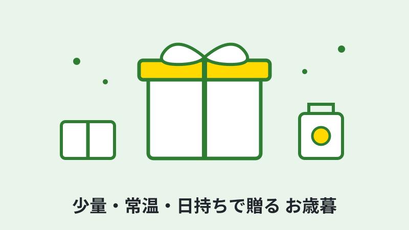
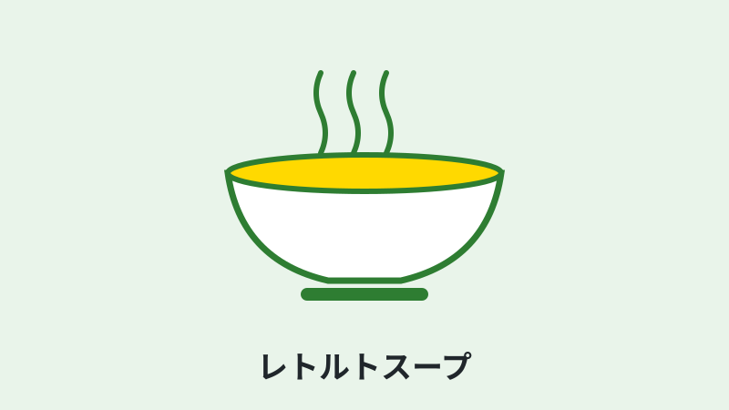
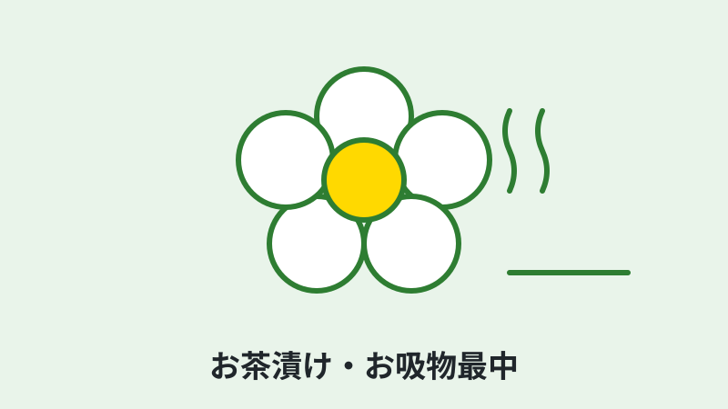
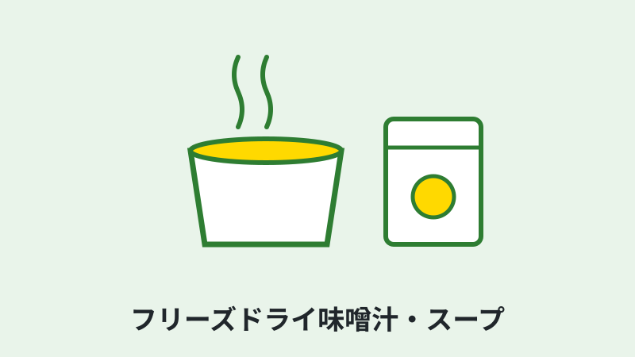
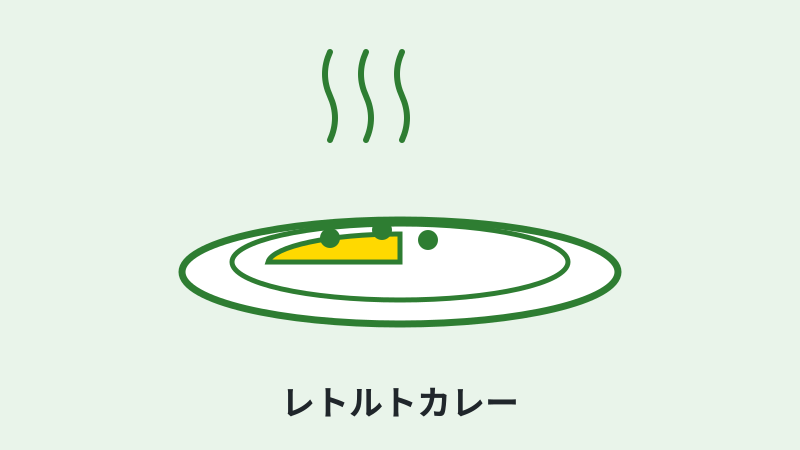
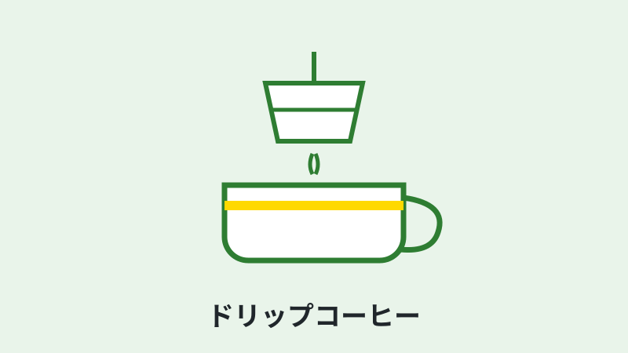
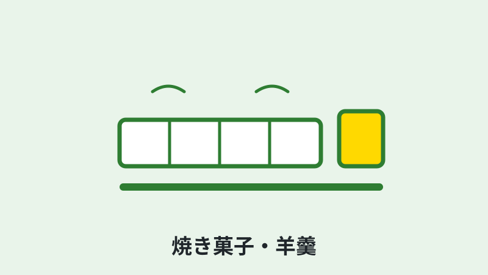
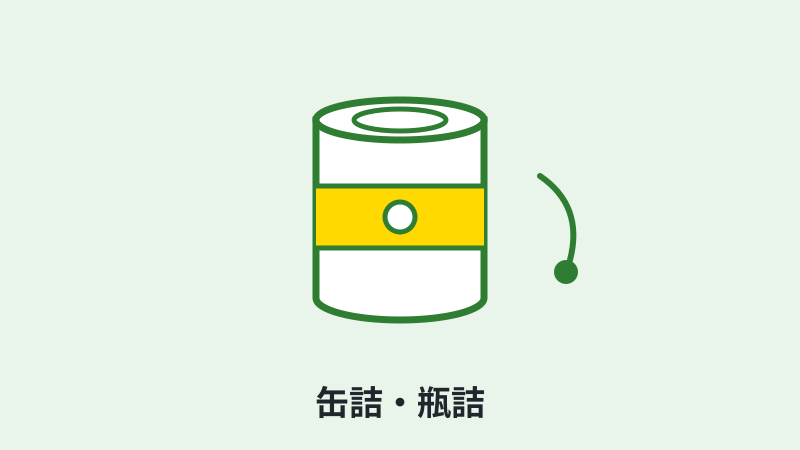
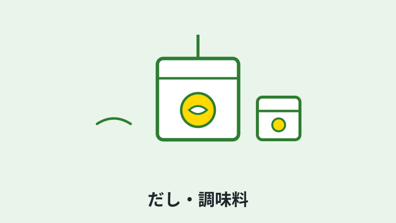

一人暮らしへのお歳暮は「少量・常温・個包装」で選ぶ｜食べ切れる食品ギフト8種と予算


一人暮らしの家族や友人へお歳暮を贈りたいけれど、「量が多すぎて困らせないか」「冷凍庫に入らなかったら」と迷う方は多いはず。この記事では、相手が無理なく食べ切れる食品だけを、基準と比較表で整理します。
基準は少量・個包装・常温保存・日持ちの4点です。相手タイプ別の答えを先に出すと：
・自炊をあまりしない人 → スープ／カレー／お茶漬け
・自炊する人 → だし・調味料／缶詰
・コーヒーを飲む人 → 個包装のドリップコーヒー
・甘いものが好きな人 → 個包装の焼き菓子・羊羹
・好みが分からない人 → 味の種類が選べる常温の詰め合わせ
このページの価格・内容量・送料は、2026年11月26日時点の楽天市場の表示に基づきます。注文前に各販売ページで最新情報を確認してください。食品の効果や健康への働きかけは扱わず、「保存しやすく、食べ切りやすいか」の基準だけで比べます。
目次
1. 選び方の4基準／2. 8種の比較表／3. 種類別8選（候補商品つき）／4. 自炊する人・しない人での選び分け／5. 避けたい食品／6. 冷蔵・冷凍を贈る場合の注意点／7. 予算の目安と1個単価／8. のし・配送・送料の確認／9. よくある質問／10. まとめ
選び方の4基準｜少量・個包装・常温保存・日持ち

判定：一般的なお歳暮ランキングの上位は、ハム・肉・海産物・果物など家族向けの量が前提です。一人暮らしへそのまま贈ると、期限内に食べ切れない・冷蔵庫に入らない、が起きやすくなります。
次の条件を満たす食品を優先します。
- 一回または一食で使い切れる量である
- 未開封なら常温で保存できる
- 賞味期限に余裕がある
- 電子レンジやお湯だけで用意できる
- 同じ味ばかりが大量に入っていない
- 相手が不在でも受け取り・再配達がしやすい
8種の比較表｜保存・小分け・調理・向いている人
| 食品 | 保存方法 | 小分け | 調理 | 向いている人 |
|---|---|---|---|---|
| レトルトスープ | 常温 | 一食ずつ | 電子レンジ・湯煎 | 忙しい人 |
| お茶漬け・お吸物最中 | 常温 | 一個ずつ | お湯を注ぐ | ご飯を炊く人 |
| フリーズドライ味噌汁 | 常温 | 一食ずつ | お湯を注ぐ | 保存場所が少ない人 |
| レトルトカレー | 常温 | 一食ずつ | 電子レンジ・湯煎 | 自炊が少ない人 |
| ドリップコーヒー | 常温 | 一杯ずつ | お湯を注ぐ | コーヒー好き |
| 個包装のお菓子・羊羹 | 常温 | 一個ずつ | 不要 | 間食を楽しむ人 |
| 缶詰・瓶詰 | 常温 | 小缶・小瓶 | そのまま・簡単調理 | 自炊する人・お酒好き |
| だし・調味料 | 常温 | 少量ずつ | 料理に使用 | 自炊する人 |
| 候補の販売ページ：スープ8食ギフトを楽天市場で見る／お茶漬け最中を楽天市場で見る／だし・野菜だしギフトを楽天市場で見る | ||||
8種の調理の手間を数えると、お湯を注ぐだけのものが3種、レンジ・湯煎が2種、そのまま食べられるものが2種、料理に使うものが1種です。相手の生活に合わせて、この配分から選ぶと失敗が減ります。
8種の調理タイプ内訳
お湯を注ぐだけ 3種（37.5%）
電子レンジ・湯煎 2種（25.0%）
そのまま食べられる 2種（25.0%）
料理に使う 1種（12.5%）
迷った場合は、6〜10食程度の常温食品が、量が多くなりすぎず、お歳暮らしい見栄えも出しやすい範囲です。
種類別8選｜楽天市場で実在確認できた候補つき
各種類について、選び方の要点と、2026年11月26日に楽天市場で実在と価格を確認できた候補を1点ずつ置きます。価格は同日時点の表示です。
1．常温保存できるレトルトスープ

一袋が一食分なら開封後に残りにくく、忙しい日の朝食や夕食に足せます。常温保存できるタイプなら、相手の冷蔵庫の空きを気にする必要もありません。
- 6〜9食程度のセットを選ぶ
- 常温保存できるか確認する
- 湯煎か電子レンジか、温め方を確認する
- 塩分やアレルギー表示も確認する
候補｜ニシキヤキッチン スープ8食ギフト
4,480円（送料無料）／560円/食
8種類のレトルトスープの詰め合わせ（全8食）。常温保存でき、湯煎または電子レンジで温めるタイプです。ギフト箱入り。

販売：公式NISHIKIYA KITCHEN楽天市場店／価格は2026年11月26日時点の楽天市場の表示です
2．お茶漬け・お吸物最中

ご飯を炊く習慣がある方に向きます。最中タイプは1個ずつ使えて常温で日持ちしやすいのが利点です。ご飯をほとんど炊かない方には使う機会が少なくなるため、お吸物も入った詰め合わせが選びやすくなります。
- お茶漬けとお吸物の両方が入った詰め合わせを選ぶ
- 個数（目安は9個前後）と賞味期限の表示を確認する
候補｜京都・辻が花 お茶漬最中＆お吸い物 最中詰合せ（YT-30）
3,480円（送料無料）／387円/個
お茶漬け5個とお吸物4個の計9個入り。常温保存で、賞味期限まで30日以上の商品を発送すると案内されています。化粧箱入り。

販売：ソムリエ@ギフト／価格は2026年11月26日時点の楽天市場の表示です
3．フリーズドライの味噌汁・スープ

保存場所を取らないのが強みです。一食ずつ個包装され、お湯を注ぐだけで用意できます。食器棚や食品ストック棚に置けて、冷蔵庫を使いません。
- 30〜40食の大容量より、6〜12食程度で複数の味が入ったセットを選ぶ
- 賞味期限の案内（何日以上のものを発送するか）を確認する
候補｜アマノフーズ おみそ汁お楽しみギフト
1,590円〜（送料無料）／199円〜/食
フリーズドライ味噌汁の詰め合わせ。8食・10食・16食から選べます。賞味期限まで122日以上の商品を発送すると案内されています。化粧箱入り。

販売：ソムリエ@ギフト／価格は2026年11月26日時点の楽天市場の表示です
4．一食分のレトルトカレー

帰宅時間が遅い方や、自炊する時間が少ない方に実用的です。常温で保存でき、ご飯があれば一食になります。同じ味が10食以上入った業務用セットは特別感が出にくいため、4〜6食程度の詰め合わせが目安です。
- 4〜6食程度の詰め合わせを選ぶ
- 辛さの種類（甘口・中辛・辛口）を確認する
- 賞味期限の長さを確認する
候補｜ゴーゴーカレー オリジナルギフトセット
2,980円〜（送料無料）／497円〜/食
金沢カレーのレトルト詰め合わせ。6食・8食から選べ、のし対応も選べます。常温保存で、賞味期限は製造から約1年半と案内されています。ギフト専用ボックス入り。

販売：ゴーゴーカレー 公式 楽天市場店／価格は2026年11月26日時点の楽天市場の表示です
5．個包装のドリップコーヒー

日常的にコーヒーを飲む方に向きます。一杯ずつ個包装のため、開封後に鮮度を急いで気にする必要がありません。常温で保管でき、職場へ持っていくこともできます。コーヒーメーカーがなくても、カップとお湯があれば飲めます。
- 20〜40杯の大型セットより、6〜15杯程度の飲み比べセットを選ぶ
- 複数ブレンドの詰め合わせだと好みに当たる確率が上がる
候補｜AGF ちょっと贅沢な珈琲店 ドリップコーヒーギフト（ZD-20D）
2,810円（送料無料）／176円/袋
4種のブレンドが各4袋、計16袋入り。常温保存で、賞味期間は製造日より約480日と案内されています。

販売：壱番館STORE／価格は2026年11月26日時点の楽天市場の表示です
6．少量・個包装の焼き菓子や羊羹

甘いものが好きな方に。一度に食べ切る必要がなく、来客時のお茶菓子にも使えます。生クリームを使う生菓子より、常温保存できる焼き菓子や小形羊羹が向きます。20〜30個入りの大箱より、6〜12個程度の詰め合わせが現実的です（老舗の小形羊羹は1本ずつ個包装で日持ちしやすいため、やや多めの本数でも候補になります）。
- 個包装かどうかを確認する
- 常温便で届く商品を選ぶ（一部地域で送料が加算される店は注記を確認）
候補｜とらや 小形羊羹14本入（K14）
4,752円（送料無料）／339円/本
1本50gの小形羊羹が14本入り（5種の味）。常温便で届きます。沖縄県宛は別途送料、九州・中国・四国・北海道宛は440円の加算があると案内されています。

販売：丸広百貨店 楽天市場店／価格は2026年11月26日時点の楽天市場の表示です
7．小さめの缶詰・瓶詰セット

自炊する方や、お酒を飲む方に。魚や肉のおかず缶詰は、未開封なら常温保存できる商品が多く、ご飯やお酒に合わせられます。大きな瓶は開封後に冷蔵保存が必要になるため、一回または数回で食べ切れる小瓶・小缶を選びます。
- 小缶・小瓶のセットを選ぶ
- 賞味期限の長さを確認する（缶詰は年単位で持つものが多い）
候補｜国分 K&K 缶つま 選べる6缶詰め合わせ
3,998円（送料無料・沖縄以外）／666円/缶
肉・魚介・洋風など6種類のセットから選べるおつまみ缶詰の詰め合わせ。賞味期限は製造日より3年と案内されています。化粧箱・のし対応あり。

販売：ええもん広場 常温惣菜 詰め合わせ／価格は2026年11月26日時点の楽天市場の表示です
8．自炊する人向けのだし・調味料

普段から料理をする方に実用的です。だしパックや小瓶の調味料は、一度に大量消費する必要がありません。大容量の油や調味料は収納場所を取り、好みに合わないと使い切れないため、複数種類を少量ずつ試せるセットが向きます。
- 少量ずつ試せる詰め合わせを選ぶ
- 賞味期限（常温で何日か）を確認する
候補｜茅乃舎 贈答箱 茅乃舎だし・野菜だしギフト
4,264円（送料無料）／125円/袋
茅乃舎だし（8g×18袋）と野菜だし（8g×16袋）の贈答箱セット。賞味期限は常温365日と案内されています。レシピ集つき。

販売：茅乃舎【公式】楽天市場店／価格は2026年11月26日時点の楽天市場の表示です
自炊する人・しない人でお歳暮を選び分ける
自炊をほとんどしない人
電子レンジ対応のスープ／レトルトカレー／フリーズドライ食品／個包装のお菓子／ドリップコーヒー。包丁・鍋・フライパンを使わずに用意できる食品を選びます。
簡単な自炊をする人
お茶漬け／味噌汁／缶詰・瓶詰／少量の調味料セット。主食や簡単な料理へ追加できる食品が使いやすくなります。
料理が好きな人
上質なだし／小瓶の調味料／地域の特産品。一般的な量販品より、自分では買わない少し上質な商品を選ぶと、お歳暮らしい特別感が出ます。
一人暮らしへのお歳暮で避けたい食品
判定：避けたいのは「量」と「保存」の2点で失敗する食品です。当てはまる場合は、少量パックや受取日時を相談できる商品に替えてください。
大容量の生鮮食品
一度に食べ切れない量の肉・魚・果物は、期限内に食べ切れない可能性があります。生鮮を選ぶ場合は、少量パックに分かれているものや、受取日時を相談できる商品にします。
冷凍庫を占有する大型セット
一人暮らし用の冷凍庫は容量が小さい場合があります。冷凍弁当やアイスクリームの大型セットは、相手の冷凍庫に入るか確認できる場合に限ります。
開封後に保存しにくい食品
大きな瓶や袋の食品は、開封後に早く消費しなければなりません。一回分または数回分で使い切れる個包装が便利です。
調理器具が必要な食品
コーヒー豆や乾麺、鍋セットなどは、相手が器具を持っているか分からない場合があります。生活習慣が分からない相手には、お湯や電子レンジだけで用意できる食品が無難です。
冷蔵・冷凍のお歳暮を贈る場合の注意点
冷蔵・冷凍食品がすべて不向きというわけではありません。ただし、次の点を事前に確認する必要があります。
- 冷蔵庫・冷凍庫に空きがあるか
- 受け取れる日時が分かるか
- 小分け包装されているか
- 解凍後に一度で食べ切れるか
- 再冷凍が必要にならないか
年末は普段より冷蔵庫へ入れる食品が増えます。相手の保存環境が分からない場合は、常温保存できる商品を優先してください。なお、冷凍で届く食事宅配のように「普段の食事の足し」として贈る形もあります。当サイト本編では、一人暮らし向け食材宅配の単価と条件を比べています（「食材宅配の比較トップ」）。
一人暮らしへのお歳暮の予算｜相手別の目安と1個単価の計算
一般的なお歳暮では、3,000〜5,000円程度の商品が選びやすい価格帯です。高価すぎる商品は、相手にお返しの負担を感じさせる場合があります。量よりも、少量で質のよい商品を選ぶのが要点です。
| 相手 | 予算の目安 | 選びやすい食品 |
|---|---|---|
| 友人・知人 | 2,000〜3,000円程度 | コーヒー・お菓子・味噌汁 |
| 親戚 | 3,000〜5,000円程度 | スープ・お茶漬け・惣菜 |
| 両親・目上の人 | 3,000〜5,000円程度 | 百貨店ギフト・老舗食品 |
| 特にお世話になった人 | 5,000円前後 | 上質な少量グルメ |
同じ予算でも、1個あたりの単価は商品で大きく変わります。この記事の候補8点で割り算すると、次のとおりです（価格は2026年11月26日時点）。
味噌汁：1,590円 ÷ 8食 ＝ 199円/食（8食タイプ）
コーヒー：2,810円 ÷ 16袋 ＝ 176円/袋
カレー：2,980円 ÷ 6食 ＝ 497円/食（6食タイプ）
スープ：4,480円 ÷ 8食 ＝ 560円/食
だし：4,264円 ÷ 34袋 ＝ 125円/袋
→ 予算2,000円台なら味噌汁・コーヒー・カレー、3,000〜5,000円帯ならスープ・羊羹・だしが収まります。「総額」ではなく「1個単価×個数」で見ると、相手が使い切れる量かどうかも一緒に判断できます。
のし・配送時期・送料も確認しよう
お歳暮の表書きには、一般的に「御歳暮」を使います。紅白の蝶結びの水引が基本ですが、のしの形式や名入れへの対応は販売店によって異なります。一人暮らしの方は日中不在にしている可能性があるため、次を確認します。
- 配達希望日や時間帯を指定できるか
- 発送前に相手へ連絡した方がよいか
- 常温便か冷蔵・冷凍便か
- 商品価格に送料が含まれているか（一部地域で加算される店もある）
- 金額の分かる明細書が同梱されないか
配送の山は12月上旬〜20日頃です。候補の多くは注文から数日で届く表示でしたが、年末が近づくほど混み合います。贈る相手が決まっているなら、早めの注文が安全です。
一人暮らしへのお歳暮についてよくある質問
- Q. 一人暮らしへ最も無難なお歳暮は？
- 相手の好みや生活習慣が分からない場合は、常温保存できる個包装のスープ・味噌汁・お菓子・コーヒーが選びやすい範囲です。相手が使うか分からない調味料や、大容量の生鮮食品は避けた方が無難です。
- Q. 何個入りがおすすめ？
- 一食分の商品なら6〜10個程度、お菓子やドリップコーヒーなら6〜15個程度が目安です。賞味期限が長い商品でも、収納場所を取りすぎない量を選びます。
- Q. 冷凍食品を贈っても大丈夫？
- 相手の冷凍庫に空きがあり、受取日時を確認できる場合は候補になります。保存環境が分からない場合は、常温保存できる食品を選ぶ方が失敗を減らせます。
- Q. 高齢の一人暮らしには何を贈ればいい？
- 量だけでなく、やわらかさ・塩分・調理のしやすさも確認してください。お湯を注ぐだけの味噌汁や、最中タイプのお吸物など、火を使わずに用意できるものが選びやすい範囲です。
まとめ｜一人暮らしへのお歳暮は食べ切りやすさを優先しよう
- 少量である
- 一回分ずつ小分けされている
- 常温保存できる
- 賞味期限に余裕がある
- 調理の手間が少ない
- 冷蔵庫や冷凍庫を圧迫しない
自炊をしない方にはスープやカレー、自炊する方にはお茶漬けや調味料、コーヒー好きには個包装のドリップコーヒーなど、生活スタイルに合わせて選んでください。

判定のまとめ：迷ったら「常温・個包装・6〜10食・送料無料」の4条件を満たすものから選ぶこと。この記事の候補8点は、2026年11月26日に楽天市場で実在と価格を確認できたものだけです。
関連｜一人暮らしの食事そのものに困っているなら
贈る相手ではなく、読み手ご自身が一人暮らしの食事に困っている場合は、食材宅配という形もあります。当サイト本編では1食単価と送料で比べています。まず試すなら、定期縛りのない初回おためしが条件の軽い入り口です。
Oisixのおためしセット（1,980円）を公式で見るOisixおためしセットの条件（1,980円・送料無料・1世帯1回限り）は公式の公表に基づきます。詳しくは「Oisix詳説」へ。
出典：各候補商品の楽天市場 販売ページ（価格・内容量・保存方法・賞味期限の案内、確認日：2026年11月26日）／Oisix公式サイト（おためしセットの条件、確認日：2026年11月26日）。価格は確認時点のもので、変動します。
※このページにはアフィリエイト広告が含まれます（A8.net／楽天アフィリエイト）。価格は2026年11月26日時点の楽天市場の表示で、注文前に各販売ページで最新の価格・在庫・送料を確認してください。